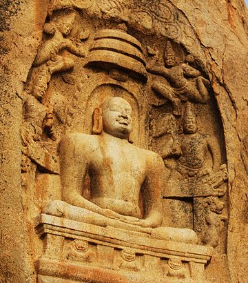

Mahavir Jayanti:
Mahaveer Janma Kalyanak, is one of the most important religious festivals for Jains. It celebrates the birth of Mahaveer, the twenty-fourth and last Tirthankara of Avasarpini.
As per the Gregorian calendar,
the holiday occurs either in March or April.